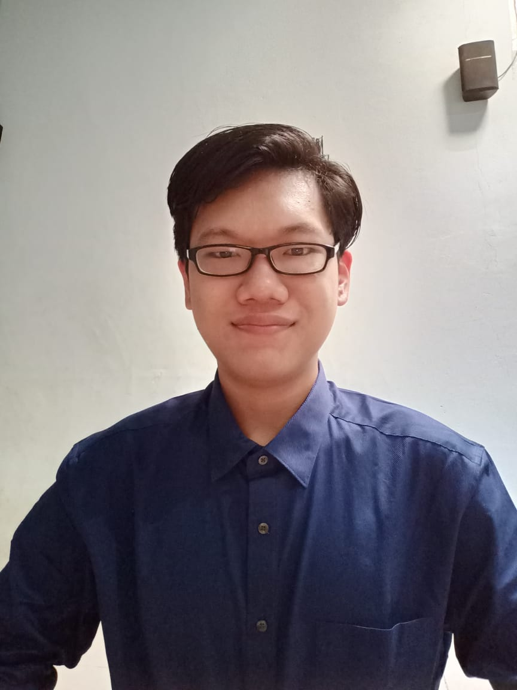

Selamat datang di Blog Pribadi saya.
Saya Michael Van dan saya akan menjelaskan sedikit tentang biodata saya.
Perkenalkan nama saya Michael Van, saya berusia 18 tahun. Saya tinggal di kabupaten kuburaya dan memiliki 2 saudara. Saya sekarang adalah seorang mahasiswa yang berkuliah di ITBSS.

Latar Belakang Pendidikan saya berawal dari TK, SD,
SMP, SMA, dan ITBSS


Saya bersekolah di TK Mulia Dharma selama 1 tahun, dilanjutkan dengan bersekolah di SD Pelita Harapan selama 6 tahun, setelah lulus saya bersekolah di SMP Bruder Pontianak selama 3 tahun, lalu saya bersekolah di SMA Santo Paulus Pontianak selama 3 tahun dan mengambil jurusan IPA.
Setelah selesai menempuh pendidikan selama 13 tahun, saya pun melanjutkan pendidikan saya dijenjang sarjana 1 di Institut Teknologi dan Bisnis Sabda Setia dan mengambil jurusan Bisnis Digital.
Saya memiliki beberapa hobi yaitu seperti Badminton, Catur, dan juga bermain game. Saya juga pernah berpatisipasi dalam beberapa perlombaan, seperti perlombaan catur yang diadakan oleh UNTAN dan juga beberapa pelombaan Esport.
Setelah selesai menempuh pendidikan selama 13 tahun, saya pun melanjutkan pendidikan saya dijenjang sarjana 1 di Institut Teknologi dan Bisnis Sabda Setia dan mengambil jurusan Bisnis Digital.
Karena saya sedang menjalani S1 saya di ITBSS, saya akan menjelaskan singkat apa itu Institut Teknologi dan Bisnis Sabda Setia.
ITBSS merupakan Institut baru yang berada di Jalan purnama 2, Pontianak, Kalimantan Barat. Institut ini memiliki 3 Jurusan yaitu Kewirausahaan, Bisnis Digital, dan juga Sistem Teknologi Informasi.
Lebih Lanjut
ITBSS merupakan Institut baru yang berada di Jalan purnama 2, Pontianak, Kalimantan Barat. Institut ini memiliki 3 Jurusan yaitu Kewirausahaan, Bisnis Digital, dan juga Sistem Teknologi Informasi.
Lebih Lanjut
- Kewirausahaan
Mempelajari, merencanakan, mengelola, dan mengembangkan sebuah usaha atau bisnis.
lebih lanjut. - Bisnis Digital
Mempelajari, mengembangkan dan mengaplikasikan teknologi digital yang mumpuni.
lebih lanjut. - Sistem Teknologi dan Informasi
Mempelajari, merancang dan mengimplementasikan produk digital (aplikasi, website, dan desain) yang sesuai dengan tujuan bisnis dan pemecahan masalah kehidupan sehari-hari.
lebih lanjut.
Visi ITBSS
Lembaga Pendidikan Tinggi yang berlandaskan nilai-nilai Kristiani dalam mempersiapkan sumber daya manusia yang unggul.Misi ITBSS
Mendidik dan melatih sumber daya manusia berkarakter, terampil, siap berkompetisi secara global dan membawa dampak positif bagi lingkungan sekitarnya.Saya memiliki beberapa hobi yaitu seperti Badminton, Catur, dan juga bermain game. Saya juga pernah berpatisipasi dalam beberapa perlombaan, seperti perlombaan catur yang diadakan oleh UNTAN dan juga beberapa pelombaan Esport.